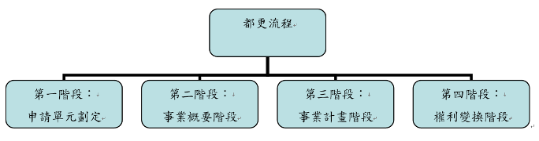

白話都更
白話都更（三）都更流程—申請單元劃定 文：戴家旭律師
都市更新的流程，一般可以分為四個階段：
第一階段：申請單元劃定。
第二階段：事業概要階段。
第三階段：事業計畫階段。
第四階段：權利變換階段。
◎更新地區與更新單元
都市更新的目的，在促進都市土地再利用與改善環境。為了讓政府資源得更有效的利用，都市更新的第一步就是由政府劃定更新地區。按照都更條例的規定，政府劃定更新地區可分為兩種：
一、優先劃定：按照都更條例第6條之規定，優先劃定的情形可以分為：
（一） 建築物窳陋且非防火構造或鄰棟間隔不足，有妨害公共安全之虞。
（二） 築物因年代久遠有傾頹或朽壞之虞、建築物排列不良或道路彎曲狹小，足以妨害公共交通或公共安全。
（三） 建築物未符合都市應有之機能。
（四） 建築物未能與重大建設配合。
（五） 具有歷史、文化、藝術、紀念價值，亟須辦理保存維護。
（六） 居住環境惡劣，足以妨害公共衛生或社會治安。
二、迅行劃定：按照都更條例第7條之規定，迅行劃定之情況可分為以下三種：
（一） 因戰爭、地震、火災、水災、風災或其他重大事變遭受損壞。
（二） 為避免重大災害之發生。
（三） 三配合中央或地方之重大建設。
至於都更單元，按照都更條例第3條第3款之規定，更新單元是指「更新地區內可單獨實施都市更新事業之分區。」可知更新單元是在更新地區範圍內，更小之都更分區。
那麼，是否只有在政府劃定之更新地區內才可以劃定都更單元呢？答案是否定的。為促進民間可以參與都更，使都市土地利用更有效率，環境更為美化，按照都更條例第11條之規定：「未經劃定應實施更新之地區，土地及合法建築物所有權人為促進其土地再開發利用或改善居住環境，得依主管機關所定更新單元劃定基準，自行劃定更新單元，依前條規定，申請實施該地區之都市更新事業。」
由此可知，縱使非政府劃定之更新地區，也可以劃定為更新單元。更新單元在政府劃定之都更地區內或都更地區外，區別在於：未來申請核報都更事業計畫之門檻較低（參白話都更【五】都更流程—事業計畫階段）。因為更新地區為政府認定較為急迫，或有公益性應該迫切進行都更之處。不要小看同意門檻高低的差別，有時候都更得否整合成功，就差這臨門一腳！
◎自行劃定更新單元（以新北市為例）
按新北市都市更新單元劃定基準之規定，於同一街廓自行劃定之更新單元，應臨接計畫道路或已指定建築線之現有巷道，其所臨接之計畫道路、現有巷道之寬度應達八公尺或與基地退縮留設深度合計達八公尺，且臨路總長度應達二十公尺，並應符合下列規定之一：(一)為完整之計畫街廓者。(二)臨接計畫道路或本府已指定建築線之現有巷道，且面積達一千五百平方公尺者。(三)臨接二條以上計畫道路，且面積達一千平方公尺者。(四)相鄰土地已開發完成，無法合併更新，其面積達一千平方公尺且一次完成更新者，或其面積達五百平方公尺且更新單元內之土地有下列情形之一者：1.經政府代管。2.依土地法第七十三條之一規定由地政機關列冊管理。3.祭祀公業土地。4.以日據時期會社或組合名義登記。5.以神明會名義登記。6.土地總登記時，登記名義人姓名或住址記載不全。(五)面積達五百平方公尺，有下列情形之一，並經新北市（以下簡稱本市）都市更新審議委員會同意者：1.更新單元內四樓以上合法建築物座落之基地面積達更新單元面積二分之一。2.合法建築物座落之基地面積與其他土地上之違章建築物投影面積達更新單元面積三分之一，其中合法建築物座落之基地面積應達前述面積總和之二分之一，且實施方式採百分之百協議合建者。3.更新單元內，合法建築物原建築容積合計高於更新單元法定容積者。4.更新單元內夾雜公有土地者。
< 返回列表地址：10580台北市南京東路四段150號2樓 電話：02-25780880#233 傳真：02-25786600
Copyright @ National Chinese Association for Urban Renewal
IE8.0 & Firefox 3.0 以上版本瀏覽器